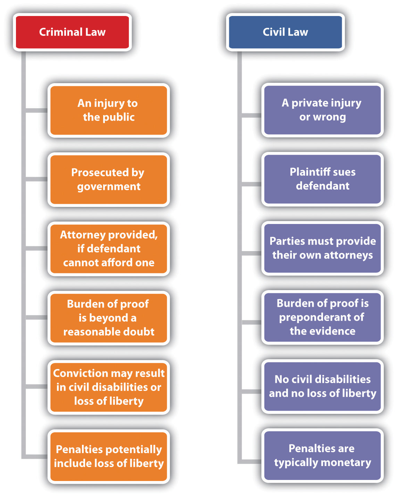

After reading this chapter, you should understand the nature of criminal law, why it is important to business, and the potential consequences of committing criminal acts. You will become familiar with white-collar crimes, blue-collar crimes, and crimes committed by businesses. You will also learn about the constitutional protections afforded to those accused of committing a crime, and the purpose of punishments for committing crimes. This chapter will explore corporate liability as well as individual liability for corporate actions. It also will examine strategies to minimize corporate criminal liability exposure or losses attributed to criminal activities. At the conclusion of this chapter, you should be able to answer the following questions:
Consider the photo in Figure 10.1 "Businessperson in Trouble". It is probably not the usual image conjured by most business students who dream of success in the business world. Yet it becomes a sad reality for too many managers and executives who commit crimes in the context of their professional lives. How can the path from business success lead to a criminal conviction? Click on any credible news source today, and you will find among the headlines a story in which this photo would fit.
Of course, there are many reasons why something like this happens. People sometimes fall into the “wrong crowd” at work, and they do not know how to walk away. Sometimes corporate culture and leadership can contaminate a work environment, causing people to disregard ethical behavior or to flagrantly ignore the laws. If “everyone is doing it,” then someone might believe that it’s OK for him or her to do it, too. Being part of an organization has a way of making someone feel insulated and “safe” when committing wrongdoings. For example, some members of the Enron workforce seemed to be swept up in a culture of corporate greed, and they did not know how to walk away. Other people are opportunists, and their moral compass or ethics do not lead them away from temptation. Bernie Madoff may be a prime example of such an opportunist in today’s news. Sometimes, criminal behavior results from the emphasis of profit over ethical behavior. For example, we might think of corporate environmental crimes, in which corporations decide not to follow regulatory requirements regarding hazardous waste disposal or storage. In the end, of course, the reasons for the criminal behavior do not matter. When a crime is committed, others will be injured, and the wrongdoer will be subject to criminal prosecution.
Everyone must be diligent about crime. Crimes affect businesses both from the inside and from the outside. Even if individuals are honest in their dealings, that does not relieve them from the necessity to maintain a vigilant watch to protect not only their good name but also that of their business from the criminal activities of others. Criminal activity “from the outside” can be costly to businesses. Loss through property damage, theft, shoplifting, corporate espionage, fraud, and arson are real threats. Perhaps more insidiously, threats “from the inside” also pose tremendous risk of loss. These activities include crimes such as embezzlement, computer crimes, and fraud. Such “inside jobs” are perhaps more unsettling because the perpetrators are often trusted colleagues who would not ordinarily fall under the suspicion of others. Moreover, a corporation must also protect itself from the bad judgment or overzealous behavior of its employees. If an employee acting within the scope of employment commits a crime from which the corporation itself will benefit, then the corporation can be convicted of the crime, too. Of course, not all corporations that are convicted on criminal charges are hapless victims of an overzealous employee who commits crimes on their behalf. Other businesses are actively involved in crime, whether through a corporate culture run amok or through outright organized crime, such as money laundering.
Let’s explore criminal law in the business world. Not only do we need to understand basic criminal law and the nature of crime in business to understand everyday headlines, but we also must ensure that our own professional dealings and the people associated with our businesses are never the legitimate focus of such stories. This chapter explores the differences between criminal law and civil law, the nature of criminal law, the constitutional protections afforded to those accused of committing a crime, relevant defenses, consequences of committing crimes, and the goals of punishment. It also examines specific crimes relevant to business, including white-collar crime, blue-collar crime that harms businesses, and crimes committed by businesses. Last, it examines different strategies to minimize exposure to criminal liability.
Criminal law is relevant to business because crime presents real threats. When crimes are committed, people are injured. Criminal behavior is punishable by law. Risks to business posed by crime arise from the losses suffered from the criminal activities of those on the outside of the business organization, as well as those on the inside. Corporations themselves can be liable for crime when an employee working within the scope of employment commits crime that benefits the corporation, or when the corporation itself commits crime.
Imagine a bookkeeper who works for a physicians group. This bookkeeper’s job is to collect invoices that are due and payable by the physicians group and to process the payments for those invoices. The bookkeeper realizes that the physicians themselves are very busy, and they seem to trust the bookkeeper with the task of figuring out what needs to be paid. She decides to create a fake company, generate bogus invoices for “services rendered,” and send the invoices to the physicians group for payment. When she processes payment for those invoices, the fake company deposits the checks in its bank account—a bank account she secretly owns. This is a fraudulent disbursement, and it is just one of many ways in which crime occurs in the workplace. Check out Note 10.4 "Hyperlink: Thefts, Skimming, Fake Invoices, Oh My!" to examine several other common embezzlement schemes easily perpetrated by trusted employees.
http://www.acfe.com/resources/view.asp?ArticleID=1
Think it couldn’t happen to you? Check out common schemes perpetrated by trusted employees in this article posted on the Association of Certified Fraud Examiners’ Web site.
When crime occurs in the workplace or in the context of business, the temptation might be to think that no one is “really” injured. After all, insurance policies can cover some losses. Sometimes people think that if the victims of embezzlement do not immediately notice the embezzlement, then they must not “need” the money anyhow, so no real crime has been committed. Of course, these excuses are just smoke screens. When an insurance company has to pay for a claim arising from a crime, the insurance company is injured, as are the victim and society at large. Similarly, the fact that wealthy people or businesses do not notice embezzlement immediately does not mean that they are not entitled to retain their property. Crime undermines confidence in social order and the expectations that we all have about living in a civil society. No crime is victimless.
A crimeA public injury. is a public injury. At the most basic level, criminal statutes reflect the rules that must be followed for a civil society to function. Crimes are an offense to civil society and its social order. In short, crimes are an offense to the public, and someone who commits a crime has committed an injury to the public.
Criminal law differs from civil law in several important ways. See Figure 10.3 "Comparison between Criminal Law and Civil Law" for a comparison. For starters, since crimes are public injuries, they are punishable by the government. It is the government’s responsibility to bring charges against criminals. In fact, private citizens may not prosecute each other for crimes. When a crime has been committed—for instance, if someone is the victim of fraud—then the government collects the evidence and files charges against the defendant. When someone is charged with committing a crime, he or she is charged by the government in an indictmentA formal document in which the government accuses a legal person of a crime.. The victim of the crime is a witness for the government but not for the prosecutor of the case. Note that our civil tort system allows a victim to bring a civil suit against someone for injuries inflicted on the victim by someone else. Indeed, criminal laws and torts often have parallel causes of action. Sometimes these claims carry the same or similar names. For instance, a victim of fraud may bring a civil action for fraud and may also be a witness for the state during the criminal trial for fraud.
Figure 10.3 Comparison between Criminal Law and Civil Law
In a criminal case, the defendant is presumed to be innocent unless and until he or she is proven guilty. This presumption of innocenceThe presumption made about any criminal defendant prior to verdict. Criminal defendants do not have to prove their innocence. means that the state must prove the case against the defendant before the government can impose punishment. If the state cannot prove its case, then the person charged with the crime will be acquittedTo be found not guilty of a crime.. This means that the defendant will be released, and he or she may not be tried for that crime again. The burden of proofA duty to prove. In a criminal trial, the burden of proof is on the prosecution. In a civil trial, the burden of proof is usually the plaintiff’s burden. in a criminal case is the prosecution’s burden, and the prosecution must prove its case beyond a reasonable doubtThe standard of proof in a criminal trial. It means that the evidence must be so compelling that there is no reasonable doubt as to the defendant’s guilt.. This means that the defendant does not have to prove anything, because the burden is on the government to prove its case. Additionally, the evidence must be so compelling that there is no reasonable doubt as to the defendant’s guilt. To be convicted of a crime, someone must possess the required criminal state of mind, or mens reaA guilty mind, or a criminal state of mind.. Likewise, the person must have committed a criminal act, known as actus reusThe guilty act, or the criminal action..
Compare this to the standard of proof in a civil trial, which requires the plaintiff to prove the case only by a preponderance of the evidenceThe standard of proof in a civil trial. It means that the evidence that supports the claim is more likely than not.. This means that the evidence to support the plaintiff’s case is greater (or weightier) than the evidence that does not. It’s useful to think of the criminal standard of proof—beyond a reasonable doubt—as something like 99 percent certainty, with 1 percent doubt. Compare this to preponderance of the evidence, which we might think of as 51 percent in favor of the plaintiff’s case, but up to 49 percent doubt. This means that it is much more difficult to successfully prosecute a criminal defendant than it is to bring a successful civil claim. Since a criminal action and a civil action may be brought against a defendant for the same incident, these differences in burdens of proof can result in verdicts that seem, at first glance, to contradict each other. Perhaps the most well-known cases in recent history in which this very outcome happened were the O. J. Simpson trials. Simpson was acquitted of murder in a criminal trial, but he was found liable for wrongful death in a subsequent civil action. Check out Note 10.14 "Hyperlink: Not Guilty Might Not Mean Innocent" for a similar result in the business context.
http://www.bloomberg.com/apps/news?pid=20601103&sid=a89tFKR4OevM
Richard Scrushy of HealthSouth was acquitted of several criminal charges relating to accounting fraud but was found civilly liable for billions. He was subsequently found guilty in a later criminal case for different crimes committed.
This extra burden reflects the fact that the defendant in a criminal case stands to lose much more than a defendant in a civil case. Even though it may seem like a very bad thing to lose one’s assets in a civil case, the loss of liberty is considered to be a more serious loss. Therefore, more protections are afforded to the criminal defendant than are afforded to defendants in a civil proceeding. Because so much is at stake in a criminal case, our due processA constitutional guarantee of fairness by procedure. requirements are very high for anyone who is a defendant in criminal proceedings. Due process procedures are not specifically set out by the Constitution, and they vary depending on the type of penalty that can be levied against someone. For example, in a civil case, the due process requirements might simply be notice and an opportunity to be heard. If the government intends to revoke a professional license, then the defendant might receive notice by way of a letter, and the opportunity to be heard might exist by way of written appeal. In a criminal case, however, the due process requirements are higher. This is because a criminal case carries the potential for the most serious penalties.
A person accused of a crime has several rights, which are guaranteed by the U.S. Constitution. Many crimes are state law issues. However, many provisions of the U.S. Constitution’s Bill of Rights, which contains the rights of concern to criminal defendants, have been incorporated as applicable to the states. This is known as the incorporation doctrine.
The Sixth Amendment guarantees that criminal defendants are entitled to an attorney during any phase of a criminal proceeding where there is a possibility of incarceration. This means that if a defendant cannot afford an attorney, then one is appointed for him or her at the state’s expense.
The Fifth Amendment guarantees the right to avoid self-incrimination. This right means that the government cannot torture someone accused of committing a crime. Obviously, someone under the physical and psychological pain of torture will admit to anything, and this might be a strong incentive to allow torture if the government wanted someone to confess to a crime. However, the Fifth Amendment guarantees that people can choose to remain silent. No one is compelled to testify against himself or herself to make self-incriminating statements.
The Eighth Amendment prohibits cruel and unusual punishment. We do not employ many techniques that were once used to punish people who committed crimes. For instance, we do not draw and quarter people, which was a practice in England during the Middle Ages. Recently, however, the question of the use of torture by the United States against aliens on foreign soil has been a hot topic. Many people believe that our Eighth Amendment protections should be extended to everyone held by U.S. authorities, whether they are on U.S. soil or not.
The Fourth Amendment provides a prohibition against illegal searches and seizures. This means that if evidence were obtained in violation of the Fourth Amendment, then it cannot be used against the defendant in a court of law. For Fourth Amendment requirements to be met, the government must first obtain a search warrant to search a particular area for particular items if there is a reasonable expectation of privacy in the area to be searched. The search warrant is issued only on probable causeThe standard required for a search warrant to be issued. It arises when there is enough evidence, such as through corroborating evidence, to reasonably lead to the belief that someone has committed a crime.. Probable cause arises when there is enough evidence, such as through corroborating evidence, to reasonably lead to the belief that someone has committed a crime.
If a valid search warrant is issued, then the government may search in the area specified by the warrant for the item that is the subject of the warrant. If a search occurs without a warrant, the search might still be legal, however. This is because there are several exceptions to the requirements for a search warrant. These include the plain view doctrine, exigent circumstances, consent, the automobile exception, lawful arrest, and stop and frisk. The plain view doctrine means that no warrant is required to conduct a search or to seize evidence if it appears in the plain view of a government agent, like a police officer. Exigent circumstancesAn exception to the warrant requirement, specifically when an emergency exists, such as a hot pursuit. mean that no warrant is required in the event of an emergency. For instance, if someone is cruelly beating his dog, the state can remove the dog without a warrant to seize the dog. The exigent circumstances exception to the warrant requirement is used in hot pursuit cases. For example, if the police are in hot pursuit of a suspect who flees into a house, the police can enter the house to continue the pursuit without having to stop to first obtain a warrant to enter the house. ConsentAn exception to the warrant requirement, in which a person with valid authority permits a search to proceed without a warrant. means that the person who has the authority to grant consent for a search or seizure has granted the consent. This does not necessarily have to be the owner of the location to be searched. For example, if your roommate consents to a search of your living room, which is a common area shared by you and your roommate, then that is valid consent, even if the police find something incriminating against you and you or your landlord did not consent to the search. The automobile exceptionAn exception to the warrant requirement, specifically when the vehicle is detained pursuant to a lawful stop. means that an automobile may be searched if it has been lawfully stopped. When a police officer approaches a stopped car at night and shines a light into the interior of the car, the car has been searched. No warrant is required. If the police officer spots something that is incriminating, it may be seized without a warrant. Additionally, no warrant is required to search someone who is subject to lawful arrestAn exception to the warrant requirement, specifically referring to a pat-down search permitted when someone is lawfully arrested.. This exception exists to protect the police officer. For instance, if the police could not search someone who was just arrested, they would be in peril of injury from any weapon that the person in custody might have possession of. Similarly, if someone is stopped lawfully, that person may be frisked without a warrant. This is the stop and friskAn exception to the warrant requirement, specifically permitted when a person is stopped for some permissible purpose by law enforcement officers. Allows a pat-down search or a “frisk.” exception to the warrant requirement.
In the business context, it is also important to note that administrative agencies in certain limited circumstances may conduct warrantless searches of closely regulated businesses, such as junkyards, where many stolen cars are disassembled for parts that can be sold.
If the government violates a defendant’s constitutional rights when collecting evidence, then the evidence gathered in violation of those rights may be suppressed at trial. In other words, it may not be used against the defendant in trial. This is because evidence obtained through an illegal search is “fruit of the poisonous tree.” The fruit of the poisonous tree doctrine is known as the exclusionary ruleA means to suppress evidence that was obtained illegally.. You should know, however, that lying to the defendant, or using forms of trickery and deceit, are not constitutional violations.
Another common defense arises under the exclusionary rule regarding confessions. This is when the government, while holding someone in a custodial interrogationOccurs when a suspect is in custody, which means that the suspect cannot leave, and subject to interrogation, which means that words spoken or actions undertaken by government officials are likely to induce a response., questions that person without first reading the Miranda warningsRead to persons in custody, so that they are made aware of some of their constitutional rights. Failure to read Miranda warnings when someone is subject to a custodial interrogation may render statements uttered by the suspect inadmissible under the exclusionary rule.. If someone is subjected to a custodial interrogation, he or she must first be read the Miranda warnings, which you have probably heard in the movies. Though the U.S. Supreme Court did not script the warnings specifically, the warnings are usually delivered in language close to this: “You have the right to remain silent. Anything that you say can and will be used against you in a court of law. You have the right to an attorney. If you cannot afford an attorney, one will be provided to you by the state. Do you understand your rights?”
The purpose of the Miranda warnings is to ensure that people understand that they have the right not to make self-incriminating statements and that they have the right to have counsel. If someone wants to invoke his or her rights, he or she has to do so unequivocally. “Don’t I need a lawyer?” is not enough.
The Miranda warnings are not required unless someone is in custody and subject to interrogation. Someone in custody is not free to leave. So if a police officer casually strikes up a conversation with you while you are shopping in the grocery store and you happen to confess to a crime, that confession will be admissible as evidence against you even though you were not Mirandized. Why? Because you were not in custody and you were free to leave at any time. Likewise, if the police are not interrogating a person, then any statement made can also be used against that person, even if he or she is not Mirandized. Someone is being interrogated when the statements or actions by the police (or other government agent) are likely to give rise to a response.
Another defense provided by the U.S. Constitution is the prohibition against double jeopardyThis means that the government may not prosecute someone twice for the same offense. It is prohibited by the Fifth Amendment to the U.S. Constitution.. The Fifth Amendment prohibits the government from prosecuting the same defendant for the same crime after he or she has already stood trial for it. This means that the government must do a very thorough job in collecting evidence prior to bringing a charge against a defendant, because unless the trial results in a hung jury, the prosecution will get only that one chance to prosecute the defendant.
Other defenses to crime are those involving lack of capacity, including insanity and infancy. InsanityA lack of capacity defense, specifically applicable when the defendant did not understand that his or her actions were wrong. is a lack of capacity defense, specifically applicable when the defendant lacks the capacity to understand that his actions were wrong. InfancyA defense that may be used by persons who have not yet reached the age of majority, typically eighteen years of age. is a defense that may be used by persons who have not yet reached the age of majority, typically eighteen years of age. Those to which the infancy defense applies are not “off the hook” for their criminal actions, however. Juvenile offenders may be sentenced to juvenile detention centers for crimes they commit, with common goals including things like education and rehabilitation. In certain circumstances, juvenile offenders can be tried as adults, too.
Last, the state may not induce someone to commit a crime that he or she did not already have the propensity to commit. If the state does this, then the defendant will have the defense of entrapmentA defense that may be raised by a criminal defendant. Entrapment occurs when the government induces someone to commit a crime that he or she had no previous propensity to commit..
If convicted in a criminal case, the defendant will be punished by the government, rather than by the victim. Once a defendant is convicted of a crime, he or she is a criminalA legal person convicted of a crime.. Punishment for criminal offenses can include fines, restitution, forfeiture, probation, civil disabilities, and a loss of liberty. Loss of liberty means that the convicted criminal may be forced to do community service, may be subject to house arrest, may be incarcerated or, in some states that have the death penalty, may even lose his or her life.
Length of incarceration varies depending on whether the conviction was for a misdemeanorA criminal offense that is less serious than a felony but more serious than an infraction. or a felonyA serious criminal offense, punishable with a prison sentence of more than one year or, in some circumstances, death.. A misdemeanor is a less serious offense than a felony, as determined by the legislative body and reflected in the relevant statutes. Even an infractionA criminal offense, which is less serious than a misdemeanor., such as a parking ticket, is a criminal offense, typically carrying a penalty of a fine. An infraction is considered less serious than a misdemeanor.
When someone is convicted of violating a state criminal statute—a felony, misdemeanor, or infraction—the penalty will be set by the statute. For instance, the statute might state that the punishment will be “up to $5,000” or “up to one year in jail.” Often, the possible punishments are given in a range, which allows the judge leeway to take other matters into consideration when sentencing the offender. For example, if someone is convicted of a misdemeanor that carries a penalty of up to one year in jail, but that person is a first-time offender with no prior criminal history, the judge might impose a sentence of some lesser time in jail, such as thirty days, or no jail time whatsoever.
Historically, all judges had the leeway to use their judgment when sentencing convicted criminals. However, disparities in sentences gave rise to concern about unequal treatment for similar offenses. In the 1980s the U.S. Sentencing Commission established the Federal Sentencing GuidelinesCreated by the U.S. Sentencing Commission to provide advisory guidelines to federal judges when sentencing criminals., which were understood to be mandatory guidelines that federal judges were expected to use when sentencing offenders. The mandatory nature of these guidelines led some to observe that extremely harsh penalties were mandated for relatively minor offenses, given certain circumstances. Today, however, the federal guidelines are only advisory, due to the U.S. Supreme Court’s decision in United States v. Booker, which held that a wide range of factors should be taken into consideration when sentencing offenders.United States v. Booker, 543 U.S. 220 (2005). This opinion restored to federal district court judges the power to exercise their judgment when sentencing federal offenders. Several states, however, passed their own versions of sentencing guidelines, and state trial court judges in those states must rely on those guidelines when sentencing state offenders. This has led to controversial “three strikes” laws, which can also carry extremely harsh penalties—such as incarceration for twenty-five years to life—for relatively minor offenses.
Often, the convicted criminal will be subject to various civil disabilities, depending on the state in which he or she lives. For instance, a felonA legal person convicted of a felony., which is a criminal that has been convicted of a felony, may be prohibited from possessing firearms, running for public office, sitting on a jury, holding a professional license, or voting. A felon may be subject to deportation if he or she is an illegal immigrant.
Besides loss of liberty and civil disabilities, other forms of punishment exist. Some of these are also appropriate in civil cases. Punishment for crimes also includes a fineA monetary penalty., which is a monetary penalty for committing an offense. Fines can also be levied in civil cases. RestitutionPenalty levied to repay to damages., which is repayment for damage done by the criminal act, is a common punishment for property damage crimes such as vandalism. Restitution can also be an appropriate remedy in civil law, particularly in contracts disputes. ForfeitureInvoluntarily losing ownership of property that was used in criminal activities., which means involuntarily losing ownership of property, is also a punishment, and it is commonly used in illegal drug trafficking cases to seize property used during the commission of a crime. Check out Note 10.39 "Hyperlink: Shopping, Anyone?", which is the U.S. Marshall’s Assets Forfeiture page, to see forfeited property currently available for sale. Finally, probationA common penalty for committing crime, which means that the criminal is under the supervision of the court but is not confined. is a common penalty for committing crime. Probation is when the criminal is under the supervision of the court but is not confined. Typically, the terms of the probation require the criminal to periodically report to a state agent, such as a probation officer.
Conviction of a crime carries criminal penalties, such as incarceration. But what is the purpose of punishment? We do not have a vigilante system, where victims may bring their own form of justice to an offender. If we had such a system we would have never-ending feuds, such as the infamous and long-standing nineteenth-century dispute between the Hatfields and McCoys from the borderlands of West Virginia and Kentucky.
Several goals could be the focus of a criminal justice system. These could include retribution, punishment, rehabilitation, the protection of society, or deterrence from future acts of crime. Our criminal justice system’s penalties ostensibly do not exist for the purpose of retribution. Rather, rehabilitation, punishment, the protection of society, and deterrence from committing future crimes are the oft-cited goals. The Federal Bureau of Prisons captures some of these concepts in its mission statement.Federal Bureau of Prisons, “Mission and Vision of the Bureau of Prisons,” http://www.bop.gov/about/mission.jsp (accessed September 27, 2010). Sadly, rehabilitation programs are not always available or, when they are, they are not always considered appropriate—or, when appropriate, they do not always work. Additionally, the goal of deterrence is not always achieved, as reflected in high recidivism rates in the United States.
Punishments committed by “white-collar criminals” are the same as those committed by any criminal. White-collar crimeA term used to describe nonviolent crimes committed by people in their professional capacity or by organizations. is a term used to describe nonviolent crimes committed by people in their professional capacity or by organizations. Individuals involved in white-collar crime are criminally liable for their own actions.
Additionally, since a corporation is a legal person, then the corporation can be convicted of committing crimes, too. Accordingly, corporations can be punished. However, not all constitutional protections afforded to individuals are available to corporations. For instance, a corporation does not have the right against self-incrimination.
One difficulty that arises is the question of how to punish a corporation for engaging in criminal activity. After all, as they say, a corporation does not have a soul to rehabilitate or a body to incarcerate.Albert W. Alschuler, “Two Ways to Think about the Punishment of Corporations,” American Criminal Law Review, Public Law and Legal Theory Series, No. 09-19, 2009, p. 13, http://papers.ssrn.com/sol3/papers.cfm?abstract_id=1491263 (accessed September 27, 2010).This is a paraphrase of a remark first uttered by Lord Chancellor Thurlow between 1778 and 1792: “No soul to damn, no body to kick.” This is very different from a human being, who will stand to lose his or her liberty or who might be subject to mandatory counseling.
We might argue that a criminal corporation should have its corporate charter revoked, which would be equivalent to a corporate death penalty. However, if that happened, a lot of innocent people who were not involved in the criminal activity would be harmed. For instance, employees would lose their jobs, and suppliers and customers would lose the goods or services of the corporate criminal. Entire communities could suffer the consequences of a few bad actors.
On the other hand, corporations must be punished to respect the goal of deterrence of future crimes. One way that corporations are deterred is by the imposition of hefty fines. It is not uncommon to base such penalties on some percentage of profits, or all profits derived from the ill-gotten gains of criminal activity.
Corporations that are criminals also lose much in the way of reputation. Of course, reputational damage can be very difficult to repair.
Crime is a public injury. Criminal law differs from civil law in important ways, including who brings the claim, the burden of proof, due process, postconviction civil disabilities, and penalties. Those who are accused of committing a crime are afforded a high level of due process, including constitutional protections against illegal searches and seizures, and self-incrimination; guarantee of an attorney; and prohibition against cruel and unusual punishment. Several common defenses to crimes exist. If convicted, criminals can face loss of liberty, with sentencing structures based on statutory language and, in the federal system, guided by the U.S. Federal Sentencing Guidelines. The goals of imposing penalties for violating criminal laws include protecting society, punishing the offender, rehabilitating the offender, and deterrence from future acts of crime. Corporations can also be convicted of crimes, though unique questions relating to appropriate means of punishment arise in that context.
Imagine that you work in a publicly traded corporation as an accountant. One day, your manager calls you. You sense desperation in his voice as he whispers, “Quick! Shred the paper copies of the financial records!” Will you do it? After all, how can shredding paper be a crime? Not so fast. It may be a crime under the Sarbanes-Oxley Act, specifically if you destroy documents before the statutory length of time required to hold them. After studying this section, you should be able to recognize when the answer to such questions should be a resounding “No!” Indeed, after reading this section, you should be able to spot criminal activity, which may lead to tough decisions, such as whether you should be a whistleblower or not.
This section addresses crimes relevant to business concerns. A business must be concerned about criminal activity from the inside, from the outside, and through its own actions.
White-collar crimeA term used to describe nonviolent crimes committed by people in their professional capacity or by organizations. is a term used to describe nonviolent crimes committed by people in their professional capacity, or by organizations. These crimes are committed for financial gain, often through deception. Historically, this term derives from a reference to the “white collars” that managers, executives, or professionals who committed these crimes wore as their everyday attire, rather than the “blue collars” of the factory workers and laborers. White-collar crimes are not typical street crimes, like burglary or robbery, and they are not person crimes, like murder or rape. Rather, the term is used to describe crime committed in the professional work environment, for the purpose of obtaining a financial reward through the use of deception. White-collar criminals frequently commit their crimes on the job, in broad daylight, while sitting at a desk.
But what leads an otherwise successful businessperson or organization to commit a white-collar crime? After all, if someone is earning a good salary, or if a business is financially healthy, why would he or she choose to violate the law? While names like Kenneth Lay of Enron and Bernie Ebbers of WorldCom are virtually synonymous with corporate greed, lack of ethical decision making, and fraudulent behavior, these examples do not provide satisfactory answers to this question. Indeed, businesses must be vigilant against white-collar crime, because there is no absolute way to identify those who might turn to criminal behavior in the workplace. White-collar crime can involve fraud or larceny, organized crime, cybercrime, and environmental crime.
White-collar crimes generally involve the use of deception to acquire money or property. This is the very definition of fraudThe use of deception to acquire money or property.. Many white-collar crimes are versions of fraud. Sometimes, white-collar crime involves outright larcenyThe trespassory taking of property with the intent to deprive the owner of it., which is the trespassory taking of property with the intent to deprive the owner of the property. In both types of white-collar crime, the criminal is trying to take property for his or her own financial gain.
Fraud is found in many contexts. For instance, many regulatory violations, like insider tradingA form of securities fraud., are forms of fraud. Specifically, these are securities fraudFraud committed in the context of investments regulated by the SEC.. Securities fraud is when someone uses deception to circumvent the regulations or statutes interpreted by the U.S. Securities and Exchange Commission (SEC) to acquire money or property. Goldman Sachs was recently charged by the SEC for securities fraud, because it allegedly misrepresented material facts to investors to gain financially. Check out Note 10.49 "Hyperlink: SEC v. Goldman Sachs" to review the complaint.
One of Goldman Sachs’s employees, Fabrice Tourre, self-named the “Fabulous Fab,” was also named as a defendant in the complaint. Do you think that the Fabulous Fab should bear criminal liability for misleading investors, even if he did mislead investors?
http://www.sec.gov/litigation/complaints/2010/comp21489.pdf
The Fabulous Fab’s testimony before Congress:
http://www.cbsnews.com/video/watch/?id=6436867n&tag=related;photovideo
Health care fraudFraud committed in the context of the health care field. is also a common type of white-collar crime. A physician who submits false claims to health insurance companies to receive money is a common example. Check out Note 10.51 "Hyperlink: Health Care Fraud’s Epidemic" to see the U.S. Department of Justice’s comments regarding health care fraud.
http://www.fbi.gov/news/videos/mp4/heat062409.mp4/view
This link is a video of the U.S. Department of Justice’s comments concerning recent indictments against several individuals accused of creating “straw patients” to submit claims to Medicaid to receive money. You can see how someone who creates fake patients to receive money has committed fraud, because he or she is using deception (fake patients) to acquire money (Medicaid payments).
Insurance fraudThe use of deception to receive insurance funds. is the use of deception to receive insurance funds. For instance, if someone falsely reports that her office was burglarized and her computer equipment was stolen, and asks her insurance company to cover the loss, then this constitutes insurance fraud. This is because the person is lying (using deception) to acquire an insurance payment (acquiring money). A common context for insurance fraud is arson. If someone intentionally burns down his office building because he wishes to collect under his fire insurance policy, then he has committed insurance fraud by arsonThe act of intentionally setting fire to property.. Arson is the act of intentionally setting fire to property.
Financial institution fraudFraud against banks and other similar institutions, such as credit unions. is fraud against banks and other similar institutions, such as credit unions. The IRS investigates financial institution fraud. Cases of financial institution fraud can involve people who falsify tax documents, or profit and loss statements to gain funding from banks, as well as those who commit money launderingOccurs when funds gained from illegal activities are processed through a seemingly legitimate business to “clean” the funds from association with criminal activities.. Check out Note 10.56 "Hyperlink: Financial Institution Fraud" for several financial institution fraud cases, most of which are excellent examples of white-collar crime.
http://www.irs.gov/compliance/enforcement/article/0,,id=213770,00.html
Consider another type of fraud, where the deception is perhaps better hidden. Bernie Madoff committed massive fraud in a scheme known as a Ponzi schemeA pyramid scheme, which is a particular type of fraud.. A Ponzi scheme is a pyramid scheme, where people pay in. Those at the top of the pyramid may receive something that appears to be a return on their investment, but those at the bottom do not. This is because the funds paid in by those at the bottom are used to pay the people at the top. Those who operate Ponzi schemes generally solicit investors, and those who invest in such schemes are expecting a legitimate return on investment (ROI). However, the master of the Ponzi scheme does not really invest the funds. He simply takes them, and keeps his early “investors” happy by bringing in new investors, whose money he gives to the old investors as their ROI. This allows the Ponzi scheme to continue, because it appears from the outside that investors are receiving a legitimate ROI. The problem is that the capital contributions eventually disappear, since they are never invested but are simply used by the criminal for his own purposes, including covering his tracks for as long as possible by paying investors with fake ROI payments as necessary. To continue, the pyramid must get bigger and bigger. That is because new investors must be attracted to keep the cash flow going. Eventually, of course, pyramids will eventually collapse under their own unsustainable structure. Check out Note 10.58 "Hyperlink: The Mechanics of a Pyramid Scheme" for an illustration of a pyramid scheme from the SEC.
Madoff was a wealth manager who defrauded investors out of billions of dollars. How does someone get away with this? Interestingly, Harry Markopolos, a financial analyst, flagged Madoff’s actions to the SEC as statistically impossible long before Madoff was caught. Check out Note 10.59 "Hyperlink: Too Good to Be True? Statistically Impossible Returns" to watch Mr. Markopolos explain this by using sports analogies. This raises interesting legal questions regarding whether the SEC is proactive enough. The SEC actions are often reactive, responding to a situation after it happened.
http://www.cbsnews.com/video/watch/?id=4834874n&tag=related;photovideo
Investors aren’t the only potential victims of white-collar crime. Owners of businesses are also potential victims. For example, embezzlementOccurs when someone takes property that was in his or her possession lawfully and then converts it to his or her own use. is a common crime, and it occurs when someone takes property that was in his or her possession lawfully and then converts it to his or her own use. As you can see, Bernie Madoff was an embezzler because he lawfully had possession of his clients’ money, but then he wrongfully converted those funds to his own use, rather than exercising his fiduciary duty to his clients. Embezzlement differs from larceny, because larceny requires the trespassory taking of property with the intent to deprive the owner of the property. In other words, in a larceny, the thief is not supposed to have possession of the property to begin with. Someone who embezzles something, however, has the right to be in possession of the property to start with but then wrongfully converts it (steals it) for his or her own use. Embezzlement strategies can involve forgeryA form of counterfeiting., which is counterfeiting someone else’s signature or other document. It can also involve wire fraudFraud committed over interstate wire, such as by telephone. if the embezzlement uses electronic communications.18 U.S.C. §1343. Refer again to Note 10.4 "Hyperlink: Thefts, Skimming, Fake Invoices, Oh My!" to learn about many different embezzlement schemes.
Corporate espionageThe use of deception to acquire the secrets of an economic competitor for financial gain. and misappropriationObtaining a trade secret by improper means. are crimes in which a competitor or would-be competitor has acted illegally to obtain trade secrets of another. The Economic Espionage ActA federal statute that criminalizes the theft of trade secrets, among other things. is a federal statute that criminalizes the theft of trade secrets. In a recent case of corporate espionage, Starwood Hotels sued Hilton, claiming that Hilton, along with some of its executives, stole millions of dollars in confidential trade secrets that were used to compete with Starwood’s successful chain of hotels.
While the term “organized crime” often summons images of the mafia, that is not the only type of organized criminal activity in this country. Consider the recent case against Pfizer, which settled with the U.S. Department of Justice in 2009. Pfizer’s subsidiaries, Pharmacia and Upjohn, had been selling pharmaceuticals “off-label” in doses and for uses not approved by the Food and Drug Administration (FDA), and it had been providing kickbacks to physicians to prescribe those drugs. The subsidiaries agreed to plead guilty to misbranding with the intent to defraud or mislead. They paid a criminal fine of more than one billion dollars and forfeited their profits from their illegal activities. Not only did they plead guilty to a criminal violation, but they also had to pay a hefty penalty for violating civil law, particularly related to paying kickbacks to physicians.FBI Press Release, “The Case Against Pfizer: A Record $2.3 Billion Settlement,” September 2, 2009, http://www.fbi.gov/page2/sept09/pfizer_settlement_090209.html (accessed September 27, 2010). KickbacksIncentive payments that are given to someone who makes decisions to encourage others to pay for something. are incentive payments that are given to someone who makes decisions to encourage others to pay for something. The repercussions of this conviction are certainly felt by those who were without knowledge of these acts, such as the shareholders and many employees, not to mention the patients who were subjected to off-label marketing in the contexts of what otherwise should have been trusting relationships with their physicians.
The Racketeer Influenced and Corrupt Organizations Act (RICO)A federal statute that penalizes racketeering activities. is a federal statute that, if violated, can add substantial prison time to a convicted criminal’s sentence. Even if someone is not per se involved with organized crime, RICO charges can be brought against a defendant who has violated the statute. This statute punishes those engaged in a pattern (at least two) of racketeering activities—which include a wide range of activities typically associated with organized crime—over a ten-year period,18 U.S.C. §1961(5). when funds from those activities were used to maintain, operate, or acquire a legitimate business. Racketeering activities include crimes such as loan-sharking, bookmaking, money laundering, counterfeiting, smuggling, blackmailing, human trafficking, and other similar crimes. Although RICO was written to target traditional organized crime, less than 10 percent of RICO cases filed have been against the mafia. RICO is now used against insurance companies, stock brokerages, tobacco companies, banks, and other large commercial enterprises. RICO also has a civil provision allowing a competitor to file RICO charges, which come with triple damages if the suit is successful.
BriberyOccurs when someone pays a government official to influence his or her decision or actions in his or her official capacity for the benefit of the person paying the bribe. occurs when someone pays a government official to influence the official’s decision or actions in his or her official capacity for the benefit of the person paying the bribe. The Foreign Corrupt Practices Act (FCPA)A federal statute that, among other things, outlaws the payment of bribes. outlaws bribery by U.S. companies doing business in foreign lands, though grease payments are permitted. Grease paymentsPayments given to speed up a process that will occur, rather than to influence a decision. are payments given to speed up a process that will occur, rather than to influence a decision. However, companies should be very careful in relying on the grease payment exception, since such payments are legal under the FCPA only if they are also legal under the laws of the country where the grease payments take place, and there are very few jurisdictions (if any) where they are indeed legal. States also have statutes against bribery.
Money laundering occurs when funds gained from illegal activities are processed through a seemingly legitimate business to “clean” the source of those funds. For example, someone who received $10,000 for criminal activities will need to “clean” the money to be able to use it legitimately. One way this can be done is by setting up a business that handles a lot of cash, which appears to be a legitimate business. This business can overstate its earnings by $10,000 over time by running the money through its books, thereby “cleaning” the funds. For example, if the business was a tavern, and the tavern grossed $12,000 per month, the ill-gotten $10,000 could be spread out over ten months by having the business claim that it grossed $13,000 each month. In that way, the ten thousand would eventually be “laundered” or “cleaned,” because it will appear to be money received by the legitimate business itself.
In that example, if someone found out about this money laundering operation and threatened to go to the authorities unless a payment was given to him to keep quiet, then that would be a form of extortion known as blackmail. BlackmailA form of extortion that occurs when someone threatens to reveal a harmful truth, such as involvement in criminal activity, but agrees to remain silent if he is paid. occurs when someone threatens to reveal a harmful truth, such as involvement in criminal activity, but agrees to remain silent if paid. ExtortionWhen someone obtains property through coercion by threat of some future action. is when someone obtains property through coercion. Another example of extortion is when a neighborhood gang extracts “protection payments” from local businesses. Essentially, the gang requires payment from local businesses periodically, and if the business refuses to pay, then the gang injures the business or its owner in some way, such as through vandalism or battery.
In organized crime cases, there can be strong incentives for people not to do the right thing. Maybe they are afraid of punishment by the government. But they may also fear punishment from their organized crime communities. In such cases, sometimes people do not tell the truth when they should. Someone who lies under oath, even if he or she thinks there’s a good reason to do so, has committed the crime of perjuryLying under oath.. Additionally, such a person might be charged with obstruction of justiceActing in a manner that creates obstacles to the administration of justice., which is acting in a manner that creates obstacles to the administration of justice.
Antitrust lawsLaws that seek to prevent activities that reduce or eliminate economic competition. seek to prevent activities that reduce or eliminate economic competition. Agreements “in restraint of trade” are prohibited.Sherman Act, 15 U.S.C. §1. These crimes involve things like collusion, allocating markets, price-fixing, and bid-rigging. Criminal convictions have been obtained for bid-rigging contracts for milk for school children, price-fixing for residential doors, and price-fixing for steel wool scouring pads.Anne K. Bingeman and Gary R. Spratling, “Criminal Antitrust Enforcement” (joint address, Criminal Antitrust Law and Procedure Workshop, American Bar Association Section of Antitrust Law, Dallas, TX, February 23, 1995), http://www.justice.gov/atr/public/speeches/0103.htm (accessed September 27, 2010). Check out Note 10.76 "Video Clip: Who Said Antitrust Is Boring? Not Hollywood!" for the movie trailer of The Informant!, which is based on an actual antitrust case involving illegal price-fixing.
Check out the movie trailer for The Informant!, which portrays the criminal price-fixing activities of senior executives at ADM Co., which is a major agribusiness. Which commodity was being price fixed? Lysine! Here is part of the trailer:
(click to see video)Congress has addressed antitrust activities through the passage of several major pieces of legislation, though not all carry criminal penalties. Specifically, the Sherman Anti-Trust ActA federal statute prohibiting antitrust activities. carries criminal penalties for antitrust violations, but other antitrust laws do not.
CybercrimesCrimes that are committed virtually. are crimes that are committed virtually from a computer or over the Internet. These crimes are on the rise, and they include activities like hacking and identity theft. Cybercrime is a broad term that includes many white-collar crimes. Cybercrime is ubiquitous these days, because virtually every desk has a computer on it. These crimes can range from non-white-collar crimes (like possession of child pornography) to traditional white-collar crime, involving the use of deception to acquire money.
The Computer Fraud and Abuse ActA federal statute that carries punishments for compromising computers used in interstate commerce or communication. is a federal statute that carries punishments for compromising computers used in interstate commerce or communication. It punishes those who access a computer to commit fraud, among other things. See Table 10.1 "Summary of Computer Fraud and Abuse Act Compromising Confidentiality Provisions"Computer Crime and Intellectual Property Section, United States Department of Justice, “Computer Fraud and Abuse Act,” http://www.justice.gov/criminal/cybercrime/ccmanual/01ccma.html (accessed September 27, 2010). for a summary of the provisions that carry criminal punishments, as well as the statutory sentences.
Table 10.1 Summary of Computer Fraud and Abuse Act Compromising Confidentiality Provisions
| Offense | Section | Sentence (Years)* |
|---|---|---|
| Obtaining national security information | (a)(1) | 10 (20) |
| Compromising the confidentiality of a computer | (a)(2) | 1 or 5 |
| Trespassing in a government computer | (a)(3) | 1 (10) |
| Accessing a computer to defraud and obtain value | (a)(4) | 5 (10) |
| Knowing transmission and intentional damage | (a)(5)(A)(i) | 10 (20 or life) |
| Intentional access and reckless damage | (a)(5)(A)(ii) | 5 (20) |
| Intentional access and damage | (a)(5)(A)(iii) | 1 (10) |
| Trafficking in passwords | (a)(6) | 1 (10) |
| Extortion involving threats to damage computer | (a)(7) | 5 (10) |
| * The maximum prison sentences for second convictions are noted in parentheses. | ||
The Unauthorized Access to Stored Communications ActA federal statute to protect the confidentiality of e-mail and voicemail. is a federal statute to protect the confidentiality of e-mail and voicemail. However, this act does not have as broad of a sweep as it might appear from its name. Courts have held that home computers, business computers, and Internet service providers (ISPs) are not “electronic communications devices” that are covered by this act. So hacking into an e-mail account providerFTC v. Netscape Communications Corp., 196 F.R.D. 559, 560 (N.D. Cal. 2000). would be prohibited by this act, but not hacking into a home computerUnited States v. Steiger, 318 F.3d 1039, 1049 (11th Cir. 2003). or a business computer.United States v. Steiger, 318 F.3d 1039, 1049 (11th Cir. 2003). Due to the narrow reading of the statute by the courts, few prosecutions have occurred under this Act since its enactment.Computer Crime and Intellectual Property Section, United States Department of Justice, “Other Network Crime Statutes, Unlawful Access to Stored Communications, 18 U.S.C. §2701, 8. Historical Notes,” http://www.justice.gov/criminal/cybercrime/ccmanual/03ccma.html (accessed September 27, 2010).
Identity theftThe unauthorized use of someone else’s identity, typically for financial gain. is also now codified into federal statute as a federal criminal violation.18 U.S.C. §1028(a)(7) and 18 U.S.C. §1028A. This crime is rampant. Identity thieves obtain credit in an otherwise creditworthy person’s name. The victim of these crimes can spend hundreds of hours repairing the damage. This is one of the primary reasons why it is very important not to reveal personal information on the Internet.
Finally, spamming is now subject to federal regulations, the violations of which are now a federal crime by virtue of the CAN-SPAM ActA federal statute carrying civil and criminal penalties for spamming.. This law serves as the vehicle to prosecute senders of large quantities of unsolicited e-mails if those e-mails do not meet the federal requirements.18 U.S.C. §1037. Marketers, beware!
Environmental crimesActions that violate federal or state statutes relating to the environment, which carry criminal sanctions. are actions that violate federal or state statutes relating to the environment, which carry criminal sanctions. The Environmental Protection Agency enforces federal environmental statutes, including those that carry a criminal penalty. Many corporations have been convicted of environmental crimes. For instance, corporations that illegally dump toxic substances into waterways, illegally harm endangered species or those species’ habitats, or trade in illegal substances that have been banned due to their propensity to cause great harm to the environment are all engaged in environmental crimes. U.S. federal environmental statutes that carry criminal penalties include the Clean Air Act; the Clean Water Act; the Resource Conservation and Recovery Act; the Comprehensive Environmental Response, Compensation, and Liability Act; and the Endangered Species Act. Additionally, state environmental law statutes frequently carry criminal penalties as well.
Recent examples of corporate convictions for environmental crimes can be found in Note 10.84 "Hyperlink: Federal Environmental Criminal Convictions".
http://www.epa.gov/compliance/resources/cases/criminal/highlights/2010/index.html
Check out this link to explore recent environmental crime convictions. Corporate convictions are not uncommon. For example, the Tulip Corporation of New York was convicted for illegally storing lead contaminated materials without a permit. Penalties included a $100,000 fine and a $25,000 to Buffalo Niagara Riverkeepers.
In another case, Mar-Cone Appliance Part Co. was convicted of purchasing and selling ozone depleting refrigerant gas, which was illegally smuggled into the United States in violation of the Clean Air Act. The sentence included a five-year probation for the business, a half-million-dollar criminal fine, and a four-hundred-thousand-dollar payment to a nonprofit organization. The company distributed this illegal substance throughout the United States, which was an action condemned as undermining global environmental efforts to reduce ozone damage for personal gain.
Blue-collar crimeA generic term used to describe crimes that are not white-collar crimes. is a generic term used to describe crimes that are not white-collar crimes. In business, property crimes (rather than person crimes) are a primary concern. A property crime is a crime involving damage to property, while a person crime is a crime involving the injury to a person’s body. Larceny is a major concern for many businesses. White-collar criminals are not the only ones who commit larceny. In retail, for instance, primary loss prevention concerns include shopliftingLarceny of goods in a retail establishment.. Shoplifting is a serious and prevalent crime. Additionally, in any type of business, employee theftLarceny by employees. is a serious problem. Last, vandalismWillful or malicious destruction of property. is unauthorized property damage, and any business with a physical presence can become the target of vandals.
Crime is a very important consideration in the business world. White-collar crimes are particularly insidious because white-collar criminals work from the inside, can be difficult to spot since they often hold positions of trust, and use deception as their primary tool. Blue-collar crimes also pose substantial risk of loss for businesses. Fraud, cybercrime, environmental crime, organized crime, and various forms of property crimes are all serious threats to businesses. Crime carries high personal costs not only to the individuals involved in the misconduct but also to society at large, including the corporations and others who depend on those corporations.
Businesses can engage in affirmative actions to reduce criminal liability. Likewise, individuals do not have to sit by passively if they know that criminal activity is afoot. This section addresses specific strategies and laws that can help combat crime in the business world.
Businesses should conduct annual training sessions, such as ethics training, to help ensure good workplace ethics. They should develop company-wide codes of ethics, which serve as the organizational commitment to ethical behavior. This can go far toward developing a corporate culture that values ethical behavior and condemns unethical actions, by providing leadership that serves as positive role models for all employees. Some companies, such as Boeing, have instituted an ethics hotline, which allows employees to anonymously report unethical behavior so that it can be investigated. Additionally, federal sentencing guidelines in place for organizations state that organizations that maintain a rigorous compliance program to detect and report violations of the law, and voluntarily disclose those violations when they occur, are eligible for significantly reduced sentences and fines.
Sometimes, of course, things still go wrong. A person who observes illegal behavior in the workplace may choose not to participate in that illegal behavior. Such a person can even choose to become a whistleblower. WhistleblowersPeople who report the illegal activity of their employers or of their organization to authorities. are people who report the illegal activity of their employers or of their organization to authorities. Typically, the whistleblowers have observed some wrongdoing that may harm others, and they decide to “blow the whistle” to protect the potential victims or to simply stop the wrongdoing.
Whistleblowers face many challenges in the workplace, not the least of which is the stigma associated with blowing the whistle. Paradoxically, even though the whistleblower may be preventing harm to innocent people, other employees may view the whistleblower as someone who has betrayed the organization. Because of this, whistleblowers are often placed in a terrible ethical dilemma, because while they may observe wrongdoing, they may not feel comfortable in reporting the illegal activity. They may fear losing their job or not being able to find a new job. Prospects of losing one’s status, friends, or reputation can prevent many people from blowing the whistle, even though they may wish the behavior to stop.
Whistleblower protection laws prohibit retaliatory action against whistleblowers. Some statutes contain whistleblower protection provisions. For example, the Sarbanes-Oxley Act contains whistleblower protection, but the statute is not entirely devoted to whistleblower protection. The False Claims Act provides that anyone who blows the whistle on a federal contractor committing fraud on the government can personally receive a portion of any amount recovered, up to 25 percent. Despite these protections, many real-world whistleblowers have discovered that the laws are cold comfort for the realities that face them after whistle is blown. Check out Note 10.93 "Hyperlink: Whistleblower Law Blog", which lists many of the statutes under which whistleblower protections are offered.
Check out the links on the right side of the Web page below. These are categories of blog entries, but they also represent a list of many federal whistleblower protections:
http://employmentlawgroupblog.com
Corporations can also avail themselves of safe harbor provisions in certain statutes. If they see criminal behavior and realize that they may be implicated in the criminal behavior, they can report certain actions to authorities, which will allow them to receive a lesser penalty, or no penalty at all. Only a few criminal statutes have safe harbor provisions, however.
Businesses can encourage ethical behavior in the workplace to help employees avoid illegal behavior through training seminars, ethical leadership, and codes of ethics. Whistleblower protection laws and provisions prohibit retaliation against whistleblowers. However, whistleblowers often experience negative consequences when they report the illegal activities of their organization to the authorities.
Crime statistics in the United States illustrate the sobering reality that businesses must maintain vigilance against criminal activities. Threats arise from the inside—from employees, officers, directors, and employees—as well as from the outside, from professional or opportunistic criminals. It makes good business sense to practice both offensive and defensive strategies to stave off these threats. This can best be accomplished through proactive policies that encourage ethical behavior, encourage whistleblowing, and create disincentives for violating the law in the form of company policies, training programs, and codes of ethics.